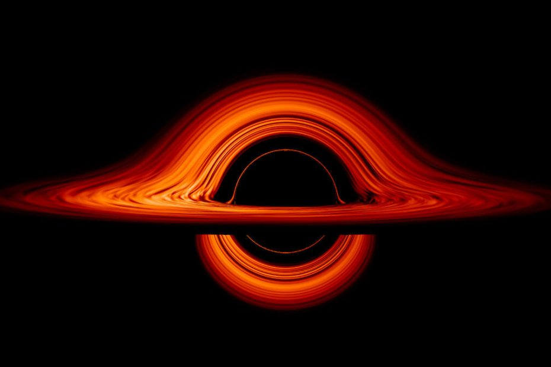

စကြာဝဠာ ကနဦးက ရှေးအကျဆုံး black hole တွင်းနက်ကြီး တစ်ခုကို ဂျိမ်းစ်ဝက်ဘ် အာကာသ တယ်လီစကုပ် (James Webb Space Telescope) ကြီးကနေ ရှာဖွေပေးလိုက် ပြန်ပါပြီ။
အခုရှာတွေ့တဲ့ တွင်းနက်ကြီးဟာ ကျွန်တော်တို့ နေ အလုံး ၁၀ သန်းနဲ့ ညီမျှတဲ့ ဒြပ်ထုကို ပိုင်ဆိုင်တဲ့ ဧရာမ တွင်းနက်ကြီး ဖြစ်ပါတယ်။ ဒီ တွင်းနက်ကြီးကို Big Bang ကနေ စကြာဝဠာ မွေးဖွားအပြီး နှစ်သန်း ၅၇၀ ခန့်ကာလမှာ တွေ့မြင်ကြရတာ ဖြစ်ပါတယ်။
အခု တွေ့ရှိရတဲ့ ဧရာမ တွင်းနက်ကြီးဟာ ဒီလို ရှေးဦး မဟာတွင်းနက်ကြီး တွေ အများအပြား အနက်က တစ်ခုသာ ဖြစ်လိမ့်မယ်လို့ ပညာရှင် တွေက ယုံကြည် ကြပါတယ်။
ဒီလောက် စောတဲ့ ကာလမှာ ဘယ်လိုလုပ်ပြီး ဒီလောက်အထိ ကြီးမားတဲ့ ဧရာမ တွင်းနက်ကြီးတွေ မွေးဖွား ဖြစ်ပေါ်လာနိုင်သလဲ ဆိုတဲ့ မေးခွန်းကို ပညာရှင်တွေ အဖြေရှာဖို့ ကြိုးစားနေ ခဲ့ကြနာ ကြာခဲ့ပါပြီ။ ဒီလောက် သက်တမ်း အချိန် တိုလေး အတွင်းမှာ ဒီလောက်ကြီးတဲ့ black hole ကြီးတွေ ဖြစ်ဖို့အတွက် အချိန် လုံလောက်မှု မရှိပါဘူး။
နောက်ပြီး ဘာ့ကြောင့် ရှေးဦး တွင်းနက်ကြီးတွေ အများအပြား မွေးဖွားခဲ့ သလဲ ဆိုတာနဲ့ ဘယ်လိုလုပ်ပြီး ဒီလောက်အထိ ကြီးလာကြသလဲ ဆိုတာနဲ့ ပါတ်သက်လို့လဲ အဖြေ ပေးနိုင်စွမ်း မရှိကြပါဘူး။
အခုတွေ့ရတဲ့ တွင်းနက်ကြီးဟာ လောလောလတ်လတ် မနေ့တနေ့ကမှ မွေးလာခဲ့တာ မဟုတ်ပါဘူး။ ဒီတော့ ဒီလို တွင်းနက်မျိုးတွေ အများအပြား ရှိလိမ့်အုံးမယ် ဆိုတာကလဲ သံသယ ဖြစ်ဖွယ် မရှိပါဘူး။ ပြီးတော့ ဒီ့ထက် ပိုစောပြီး ပိုသက်တမ်း နုတဲ့ တွင်းနက်တွေလဲ အများအပြား ရှိအုံးမှာ ဖြစ်ပါတယ်။
တွင်နက်တွေဟာ ဧရာမ ကြယ်ကြီးတွေ ပေါက်ကွဲသေဆုံးပြီး ဖြစ်လာခဲ့ကြတာ ဖြစ်ပါတယ်။ သူတို့ဟာ သူတို့ပတ်ဝန်းကျင်က ဓါတ်ငွေ့တွေ၊ ဖုန်မှုန့်တွေ နဲ့ အခြား ဒြပ်ဝတ္ထု ပစ္စည်းတွေကို စုပ်ယူစားသုံးရင်းနဲ့လဲ တဖြည်းဖြည်း အရွယ်အစား ပိုပိုပြီး ကြီးလာကြပါတယ်။
ဒီလို စုပ်ယူစားသုံးရာမှာ တွင်းနက်ထဲ ဝင်သွားတဲ့ ဓါတ်ငွေ့မော်လီကျူးတွေ အချင်းချင်း အရှိန်ပြင်းစွာ ပွတ်တိုက်မိရာက ပူပြင်း လာပါတယ်။ ဒီအခါ ဒီ ဓါတ်ငွေ့ ဝဲဂယက် ကြီးကနေ တောက်ပတဲ့ အလင်းရောင်တွေ ထွက်ပေါ်လို့ လာပါတယ်။
ဒီလို အဆက်မပြတ် အစာစားသုံးနေတဲ့ မဟာတွင်းနက် ကြီးတွေကို သက်ဝင် ဂလက်ဆီ ဗဟိုချက် ( active galactic nuclei (AGN)) လို့ ခေါ်ပါတယ်။ AGN တွေအနက်က အားအကောင်းဆုံး အမျိုးအစား တွေကတော့ ကွေဆာ (quasars) တွေပဲ ဖြစ်ပါတယ်။
ကွေဆောဆိုတာ တကယ်တော့ အရမ်း သက်ဝင် လှုပ်ရှား နေကြတဲ့ မဟာတွင်းနက် (supermassive black hole) ကြီးတွေပဲ ဖြစ်ပါတယ်။ ကွေဆာတွေဟာ နေထက် အဆသန်းပေါင်း ရာထောင်ချီအောင် ပိုမို ကြီးမား တဲ့ တွင်းနက် ကြီးတွေပါ။ နောက်ပြီး စကြာဝဠာ ထဲက အလင်းလက်ဆုံး ကြယ်တွေထက် အဆသန်းပေါင်းများစွာ ပိုလင်းထိန် ကြပါတယ်။
အလင်းဟာ လေဟာနယ် ထဲမှာ တစ်စက္ကန့်ကို ကီလိုမီတာ ၃၀၀,၀၀၀ နှုန်း နဲ့ တသမတ်ထဲ ခရီး သွားပါတယ်။ ဒီတော့ ကျွန်တော်တို့ ဆီကနေ ဝေးဝေးကို ကြည့်လေလေ အတိတ်ကို ပိုရောက် လေလေပဲ ဖြစ်ပါတယ်။
ဒီလောက်ဝေးတဲ့ အရပ်က တွင်းနက်တွေကို မြင်နိင်ဖို့က သာမန် ကင်မရာ တွေနဲ့ ရိုက်လို့ မရပါဘူး။ ဒီအကွာအဝေးက လာတဲ့ အလင်းဟာ ပြန့်ကားထွက်နေတဲ့ စကြာဝဠာ ဟင်းလင်းပြင်ထဲ ဖြတ်သန်း ခရီးနှင်ရင်း လှိုင်းအလျှား ရှည်ထွက် ဆန့်ထွက် လာတာမို့ သူတို့ဆီက အလင်းဟာ ကျွန်တော်တို့ဆီ ရောက်ချိန်မှာ အနီအောက် ရောင်ခြည်ခွင်ထဲ ရောက်ရှိလို့ သွားပါပြီ။ ဒီ အနီအောက်ရောင်ခြည်ကိုမှ ဂျိမ်းဝက်ဘ်မှာ တပ်ဆင်ထားတဲ့ အာရုံခံ ကိရိယာ က ဖမ်းယူတာ ဖြစ်ပါတယ်။
စကြာဝဠာရဲ့ အစဦးပိုင်းမှာ ဒီလောက် ကြီးမားတဲ့ တွင်းနက်ကြီးတွေ ဖြစ်ပေါ်လာပုံနဲ့ ပါတ်သက်လို့ ပညာရှင်တွေ အနေနဲ့ ကျေနပ်လောက်တဲ့ အဖြေ ပေးနိုင်စွမ်း မရှိသေးပါဘူး။ လောလောဆယ်တော့ ဖြစ်နိုင်ခြေ ရှိတဲ့ သီအိုရီ နှစ်ခုကို ပညာရှင် တွေက အဆိုပြု ထားကြပါတယ်။
ပထမ သီအိုရီ ကတော့ အလွန် အင်မတန် ကြီးမားတဲ့ ကြယ်ကြီးတွေ ပေါက်ကွဲ ထွက်သွားရာကနေပြီး ဒီ ရှေးဦး တွင်းနက်ကြီးတွေ ဖြစ်လာရတာဆိုတဲ့ သီအိုရီပဲ ဖြစ်ပါတယ်။ ဒါပေမယ့် ဒီတွင်းနက်ကြီးတွေ ဖြစ်လာရလောက်အောင် ကြီးမားတဲ့ ကြယ်တွေကို ယခုအချိန်အထိ ရှာတွေ့ခြင်း မရှိသေး သလို Big Bang မဟာပေါက်ကွဲမှု အပြီး နှစ်သန်း ၂၀၀ လောက်အတွင်းမှာ တွင်းနက်တွေ မွေးဖွားလာဖို့ ဆိုတာကလဲ သိပ်တော့ လုံလောက်တဲ့ အချိန် မဟုတ်ပြန်ပါဘူး။
နောက်သီအိုရီ တစ်ခုကတော့ ကြီးမားတဲ့ ဓါတ်ငွေ့ တိမ်တိုက် ကြီးတွေဟာ ဆွဲငင်အားကြောင့် ပြိုကျပြီး ကြယ်ဖြစ်ရမယ့် အဆင့်ကို ကျော်ကာ တွင်းနက်တွေ အဖြစ် တိုက်ရိုက် ကူးပြောင်းသွားတယ် ဆိုတဲ့ သီအိုရီပဲ ဖြစ်ပါတယ်။ ဒီ သီအိုရီ အရဆို တွင်းနက်ဖြစ်ဖို့ အချိန်အများကြီး မလိုပါဘူး။ ဒါပေမယ့် တွင်းနက်တွေ ဖြစ်ဖို့ လိုအပ်တဲ့ ဓါတ်ငွေ့တိမ်တိုက်ရဲ့ အရွယ်အစားဟာ အလွန် ကြီးမားတဲ့ တိမ်တိုက်ကြီး ဖြစ်ဖို့ လိုနေပြန်ပါတယ်။
အခုထိတော့ ဒီ သီအိုရီ နှစ်ခုအနက် ဘယ်သီအိုရီ မှန်တယ်ဆိုတာ သက်သေ မပြနိုင်သေးပါဘူး။ ဒါပေမယ့် ဂျိမ်းစ်ဝက်ဘ်က စကြာဝဠာ ကနဦး တွင်းနက်တွေ ရှာဖွေတွေ့ရှိမှုကြောင့် အဖြေသိဖို့ သိပ်တော့ မလိုတော့ဘူးလို့ မျှော်လင့်ရကြောင်း တင်ပြလိုက်ရပါတယ်။
Ref: James Webb Space Telescope discovers oldest black hole in the universe — a cosmic monster 10 million times heavier than the sun | Live Science
စကြာဝဠာကနဦးမှ ရှေးအကျဆုံး black hole တွင်းနက်ကြီး ဂျိမ်းစ်ဝက်ဘ် ရှာတွေ့

May 11, 2023
Other Posts
- X-1 ပြင်းအားရှိ နေမုန်တိုင်း ရောက်ရှိလာမည်ဟု နာဆာ သတိပေး
- ကမ္ဘာဟာ black hole တခုရဲ့ ဝါးမြိုခြင်း ခံရနိုင်သလား
- ဂရပ်ဖင်း ကို ဈေးသက်သက်သာသာဖြင့် ထုတ်နိုင်တော့မည်
- Black hole နား ကြယ်တစင်း ကပ်သွားရင် ဘာဖြစ်မလဲ
- အပြည်ပြည် ဆိုင်ရာ အာကာသစခန်း သက်တမ်းတိုးရန် သဘောတူညီမှုရရှိသွားပြီ
- ရှေးဟောင်းဗုဒ္ဓဆင်းတုတစ်ဆူ အီဂျစ်ပြည်တွင်တူးဖေါ်ရရှိ
- အာကာသထဲက မျက်လုံးကြီးနဲ့ တူတဲ့ Helix Nebula
- မဟာပိရမစ်ကြီး အတွင်း လှို့ဝှက်ခန်း ရှာတွေ့
- နေအဖွဲ့အစည်း
- Solar Storm ကြောင့် အင်တာနက်လိုင်းများ လနှင့်ချီ ပြတ်တောက်နိုင်သည့် အန္တရာယ် ပညာရှင်များက သတိပေး